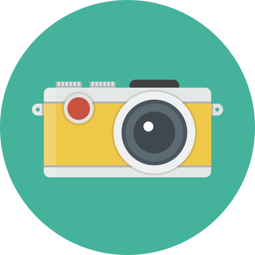

Hobbies
Computers and programming
Although I have been a computer hobbyist for as long as I can remember,
having built and maintained several custom gaming and work PCs for my friends and myself,
I have lately delved into the inner workings of computers to better understand how they work and
to become a power user of both Linux and Windows OSs.
Eating
What? you thought I was going to say cooking? no sir! I love eating good food almost as
much as I love sleeping, hmm... maybe I should have listed sleeping instead. But anyway,
hot Vichyssoise is my favorite soup ever, I do not care if the French think it's sacrilege!

Photography
While only a hobbyist, I am fairly experienced, I started when I was still in middle school and focused primarily on portrait and product photography,
although I have to say there is something quite relaxing about going out and photographing nature.
Gaming
The Age of Empires series are my favorite videogames by a long shot! But I also truly enjoy flight and car racing simulation, Skyrim,
most Halo titles, and excuse me but I could not care less about Smash Bros or Counter Strike.